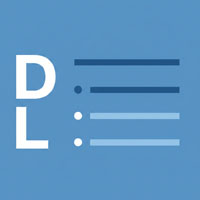
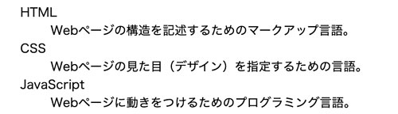

語句の解説箇条書き

- プロンプト例
HTMLの定義型リストについて解説して
HTMLの定義型リスト（<dl>）とは？
- 定義型リストは、用語とその説明をセットで表現するためのリストです。
- 用語集、FAQ、仕様説明、辞書形式のデータなどに適しています。
使用する主なタグは次の3つです：
| タグ | 意味 |
|---|---|
| <dl> | 定義リスト全体（definition list） |
| <dt> | 用語（definition term） |
| <dd> | 説明（definition description） |
<dl> <dt>HTML</dt> <dd>Webページの構造を記述するためのマークアップ言語。</dd> <dt>CSS</dt> <dd>Webページの見た目（デザイン）を指定するための言語。</dd> <dt>JavaScript</dt> <dd>Webページに動きをつけるためのプログラミング言語。</dd> </dl>
【表示イメージ】 
特徴とポイント
① 用語と説明が1対1でなくてもよい
<dl> <dt>HTTP</dt> <dd>通信プロトコル</dd> <dd>Webでのデータ転送に使われる</dd> </dl>
→ 1つの用語に複数の説明が可能
② 用語を複数まとめて1つの説明にできる
<dl> <dt>Chrome</dt> <dt>Firefox</dt> <dt>Edge</dt> <dd>Webブラウザ</dd> </dl>
→ 複数の用語 → 1つの説明も可能
よくある使用例
① 用語集
<dl> <dt>フロントエンド</dt> <dd>ユーザーが直接触れる画面部分</dd> <dt>バックエンド</dt> <dd>サーバー側の処理</dd> </dl>
② FAQ（質問と回答）
<dl> <dt>Q. 送料はいくらですか？</dt> <dd>A. 全国一律500円です。</dd> <dt>Q. 返品できますか？</dt> <dd>A. 未使用品のみ可能です。</dd> </dl>
③ 仕様・スペック表
<dl> <dt>サイズ</dt> <dd>横100px × 縦50px</dd> <dt>重量</dt> <dd>120g</dd> </dl>
CSSでのレイアウト例（表風表示）
<dl> <dt>商品名</dt> <dd>ワイヤレスマウス</dd> <dt>価格</dt> <dd>2,480円</dd> </dl>
dl { display: grid; grid-template-columns: 120px 1fr; gap: 8px; } dt { font-weight: bold; } dd { margin: 0; }
→ 表（table）風のレイアウトが作れます。
<ul> / <ol> との違い
| 種類 | 用途 |
|---|---|
| <ul> | 箇条書き（順序なし） |
| <ol> | 手順・ランキング（順序あり） |
| <dl> | 用語＋説明のペア |
注意点（ベストプラクティス）
❌ レイアウト目的だけで使わない
⭕ 意味的に「用語と説明」になっている場合に使う
→ SEO・アクセシビリティの観点でも重要
まとめ
- <dl> は 用語と説明をセットで表現
- <dt> が用語、<dd> が説明
- FAQ、用語集、仕様表に最適
- 表風レイアウトもCSSで簡単に可能